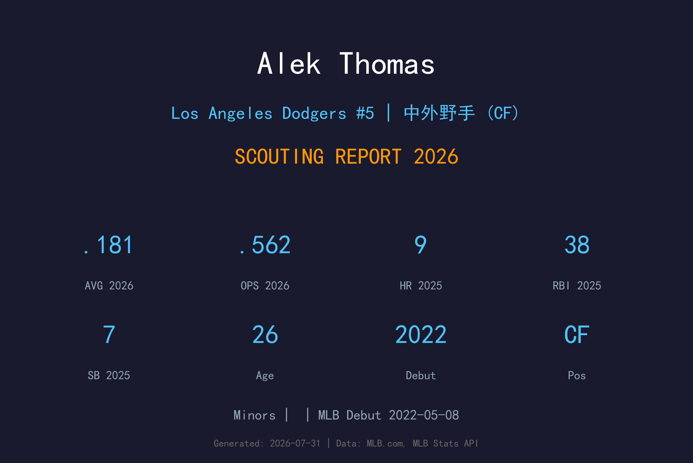
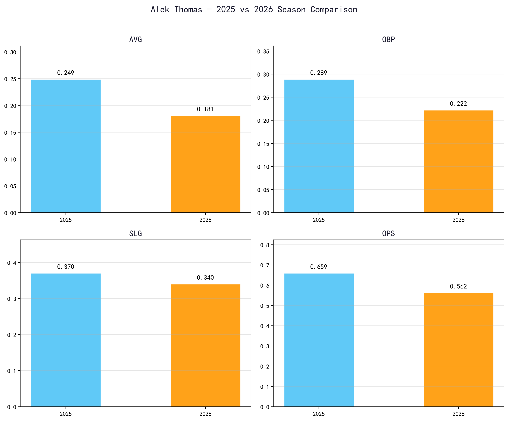
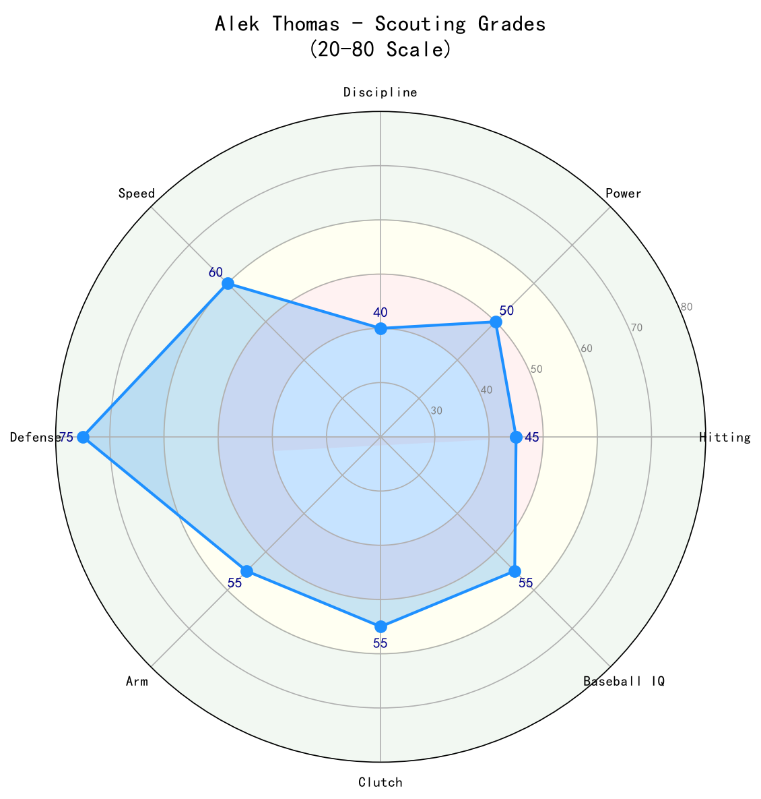

Los Angeles Dodgers #5 | 中外野手 (CF) | Minors

Alek Thomas 是一名以防守著称的左打中外野手，2022 年 5 月 8 日在亚利桑那响尾蛇完成大联盟首秀。他曾是响尾蛇 2023 年国联冠军队的重要成员，以 elite 的中外野防守与关键时刻打击闻名。
2025 年 Thomas 在响尾蛇出赛 143 场，缴出 .249/.289/.370、OPS .659 的成绩，外加 9 轰与 7 次盗垒。他的防守依旧出色，但打击表现起伏，尤其是上垒率偏低。2026 年他转战道奇体系，目前位于小联盟，道奇希望他能在需要时提供顶级中外野防守与板凳深度。
Thomas 的 value proposition 非常明确：防守优先、速度加持、偶尔长打。在道奇这样进攻火力强大的球队中，他不需要成为核心打者，只需在防守与跑垒端做出贡献即可。
Thomas 在 2018 年选秀第 2 轮被亚利桑那响尾蛇选中。他出身于芝加哥，高中时期已是备受瞩目的五拍子中外野手新秀。
2022 年 5 月 8 日，Thomas 登上大联盟。他迅速以惊人的中外野防守与左打长打潜力赢得球迷喜爱。
Thomas 是响尾蛇 2023 年闯入世界大赛的关键成员。他在季后赛多次贡献关键安打与防守 play，包括在世界大赛中的精彩守备。
Thomas 加入道奇组织，为球队提供 elite 中外野防守选项与左打板凳深度。在 Mookie Betts、Andy Pages 等人之外，他是道奇外野防守的重要保险。

📈 上图为近三年核心数据趋势。柱状图高度代表该年度表现，便于快速比较球员状态的上升或下滑。
| 赛季 | G | AVG | OBP | SLG | OPS | HR | RBI | BB | SO |
|---|---|---|---|---|---|---|---|---|---|
| 2025 | 143 | .249 | .289 | .370 | .659 | 9 | 38 | 21 | 122 |
| 2026 | 28 | .181 | .222 | .340 | .562 | 2 | 10 | 3 | 23 |
Thomas 是联盟中少数能真正镇守中外野的球员之一。他的 range、跳跃能力与接球稳定性都达到大联盟精英水准。无论打击如何，他的手套都能让他在大联盟名单中占有一席之地。
2025 年 .289 上垒率与 2026 年 .222 上垒率都偏低。Thomas 的选球耐心不足，容易被诱导追打坏球。他的长打能力偶尔闪现（2025 年 9 轰），但不足以弥补上垒能力的欠缺。
2026 年 28 场 .181/.222/.340 的数据样本有限，可能受转会适应与角色不确定性影响。道奇更看重他的防守与跑垒价值，而非短期打击数据。
Thomas 具备 Above-average 速度，能在垒上制造威胁。2025 年 7 盗与 2026 年 4 盗显示他的跑垒侵略性。在道奇体系中，他可作为 late-inning pinch-runner 或 defensive replacement 使用。
在道奇，Thomas 最可能是第四/第五外野与防守替补。他不会撼动 Pages、Betts 或 Tucker 的地位，但当需要守下领先局数或面对强打阵容时，他的中外野防守极具价值。

防守是 Thomas 立足大联盟的根本，速度与季后赛经验是加分项。若能提升上垒率，他将成为更全面的中外野答案。
B 级 / 精英防守型中外野手
Thomas 在道奇的未来取决于教练团如何定位他的角色。最可能的发展路径是作为防守替补与板凳深度，在季后赛中发挥守备价值。若能改善选球，他甚至有机会争夺更多先发机会。
2026 下半季：争取上大联盟机会，主要作为外野防守替补与跑垒工具人。
2027：若防守稳定且 offense 略有回升，可能成为道奇第四外野。
2028+：防守型中外野手的角色可能延续至 30 岁初期，但需持续提升 offense 才能延长生涯。
Alek Thomas 出生于伊利诺伊州芝加哥，是一名来自城市棒球环境的外野手。他在高中时期展现五拍子潜力，尤其以速度、防守与左打长打闻名。2018 年他被亚利桑那响尾蛇在第 2 轮选中。
在响尾蛇体系中，Thomas 快速攀升，2022 年完成大联盟首秀，并在 2023 年帮助球队闯入世界大赛。他的季后赛表现，包括关键守备与安打，让他在亚利桑那球迷心中留下深刻印象。
2026 年 Thomas 加盟洛杉矶道奇，为这支卫冕冠军提供外野防守深度。尽管打击起伏，他的手套与速度仍使他在争冠球队中具备明确价值。场外他以职业态度与团队精神著称。